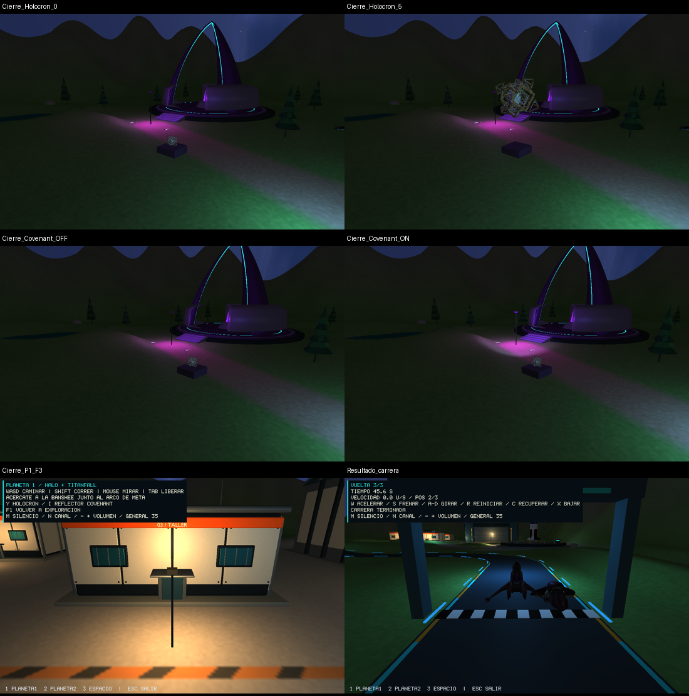
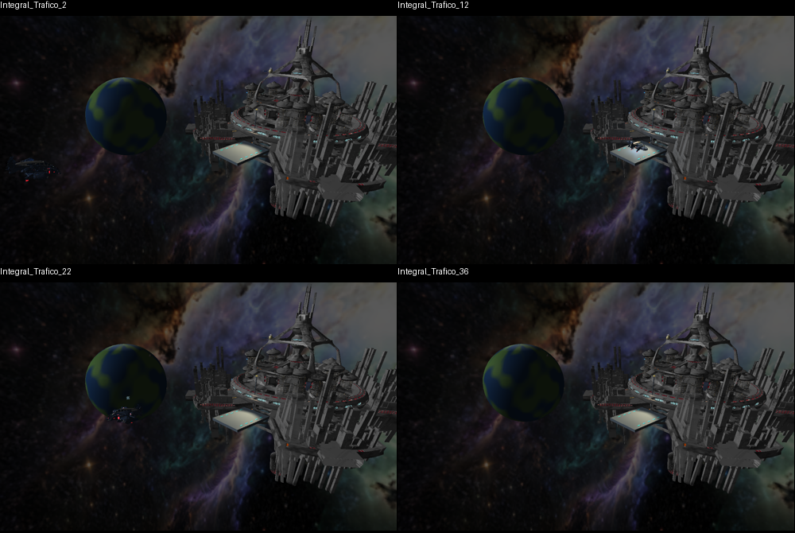
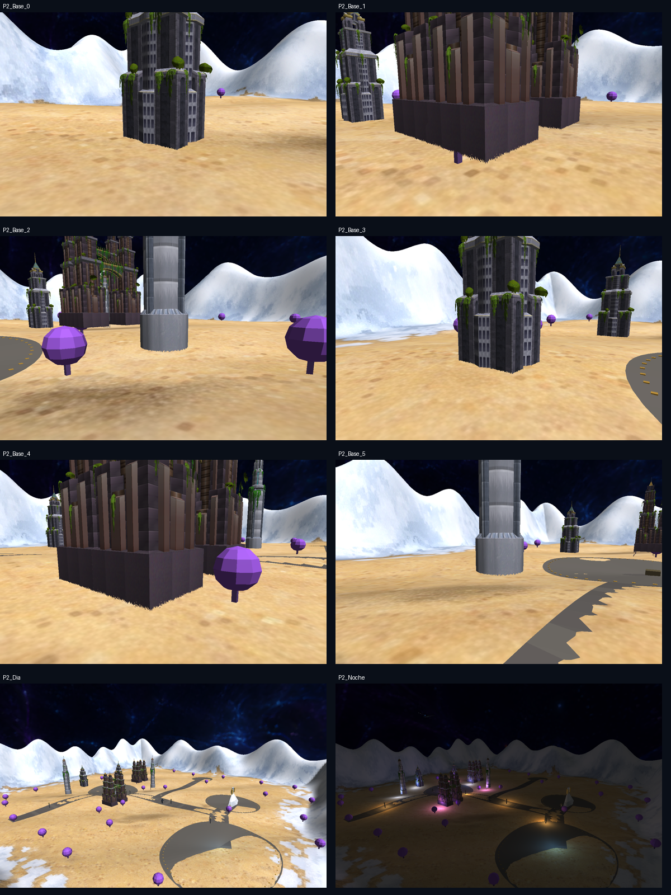

Las imágenes son capturas producidas por el ejecutable durante las pruebas; no sustituyen una partida manual completa.

Holocrón keyframe, iluminación Covenant, HUD de carrera y observación F3.

Tráfico Bézier y aproximación a la estación Freeport.

Plaza Kerwan, corredor, torre Orokin, Railjack y comparación día/noche.
Detalles técnicos: diagnóstico · pruebas · matriz